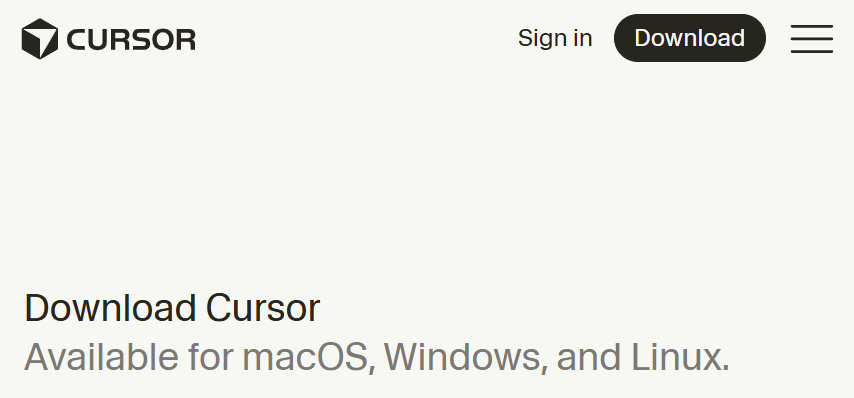
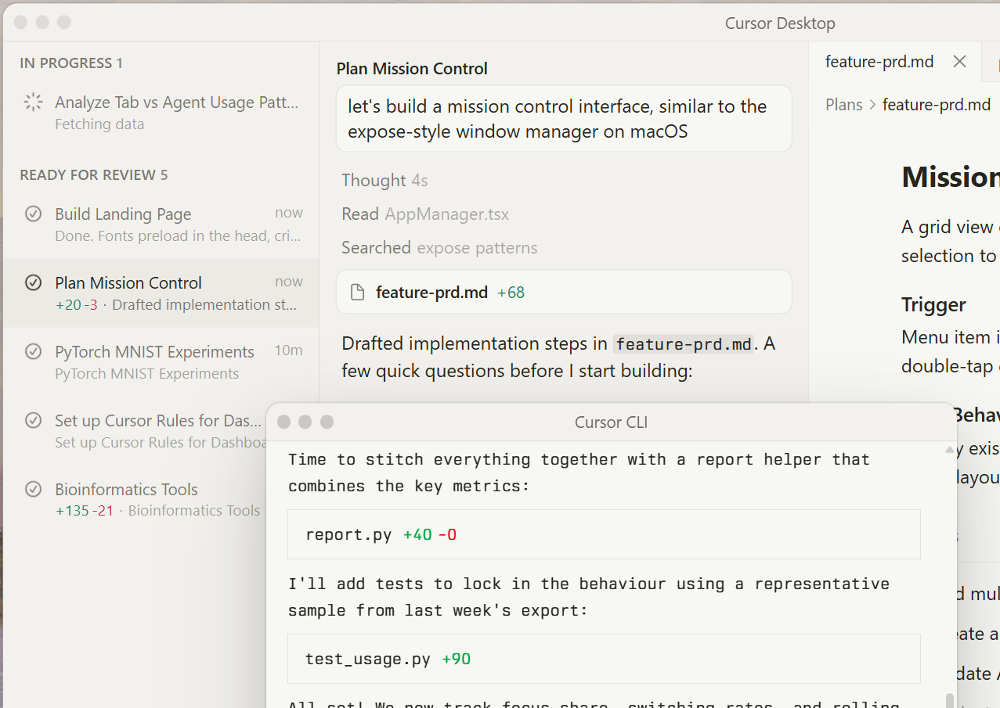

Skip this lesson if Cursor is already on your machine and opens normally.
Download from the official site only
Go to cursor.com in your browser. Use the Download button on that site — do not install from random links in emails, social posts, or search ads.

Install on Windows
- Run the installer file you downloaded (for example
CursorSetup.exe). - If Windows SmartScreen asks, confirm you trust the publisher — you downloaded from cursor.com.
- Follow the installer prompts (defaults are fine for most people).
- When finished, open Cursor from the Start menu or desktop shortcut.
Install on Mac
- Open the
.dmgfile you downloaded. - Drag Cursor into your Applications folder.
- Open Cursor from Applications. If macOS asks whether to open it, choose Open.
Sign in and choose a plan
Cursor may ask you to sign in when you first open it. Signing in enables AI features and syncs some settings. You can explore the editor first and sign in later if you prefer.
You will also be asked to pick a plan. For this Hello World series, the Free plan is enough — you can build and publish your countdown page without paying. Paid plans (for example Pro) offer more AI usage and faster responses if you decide you want that later. Start with Free; upgrade only if you hit limits or want the extra features.
On the welcome screen you may see your current plan (for example “Free Plan”) and an option to upgrade. That is normal — you do not need to upgrade to follow along.
You are ready when…
- Cursor opens without errors
- You see the editor window — menu bar at the top, sidebar on the left, main area in the center
- You can type in the chat panel (we will use that in the next lessons)

Your first prompt — see the benefit of Cursor
Install is only step one. The real payoff is asking Cursor to build something in plain English and seeing a web page appear. We do that now — a simple first version you will improve in later lessons.
Step 1 — Prepare an empty project folder
Cursor needs one folder open on your computer. Create an empty folder first (this is a one-time setup step, not code):
- Windows: for example
C:\Users\YourName\Projects\hello-world - Mac: for example
/Users/YourName/Projects/hello-world
In Cursor: File → Open Folder… (or Open project on the welcome screen) and select that empty folder.
Step 2 — Paste this prompt in Chat
Create a file named index.html in this project. It should be a simple web page with “Days until the 2026 Midterms” as the main heading at the top of the page. Use plain HTML only — no CSS and no JavaScript yet.
- Open Chat with your project folder open.
- Paste the prompt above.
- Review Cursor’s proposal. Accept when you see a single new
index.html— reject extra files if offered. - Double-click
index.htmlin Explorer, or open it in your browser. You should see your heading on the page.

That is the benefit of Cursor: you describe what you want; it writes the file. Lessons 03–12 explain the plan, improve the page, and publish it on GitHub Pages.
index.html after Cursor creates it — even a short file.
If something looks wrong, ask Cursor to fix it before you accept.